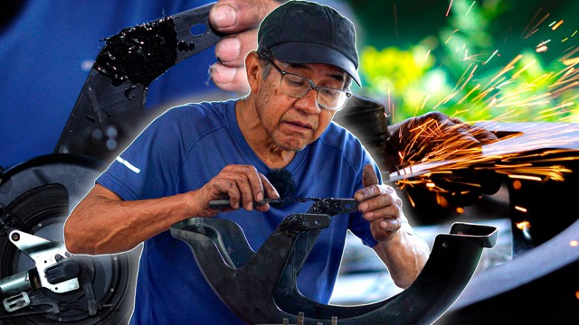

Universitario a los 30
Volver a la universidad, aprender y descubrir nuevas formas de crear. Una serie documental que registra el recorrido, dentro y fuera del aula.
Explorar producciónPRODUCCIONES / 01
Proyectos propios, relatos y experimentos que conectan con lo que nos rodea.
Volver a la universidad, aprender y descubrir nuevas formas de crear. Una serie documental que registra el recorrido, dentro y fuera del aula.
Explorar producción
Conocimiento práctico, procesos y tutoriales alrededor de la fibra de vidrio.
Explorar producción
Historias que preservan la memoria del territorio, su cultura y biodiversidad.
Explorar producción
Una aventura en pareja que documenta construir desde cero una cocina, un hogar y un emprendimiento.
Explorar producciónEste archivo seguirá creciendo con cada historia que nos encontremos.
Propón una historia ↗